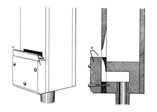
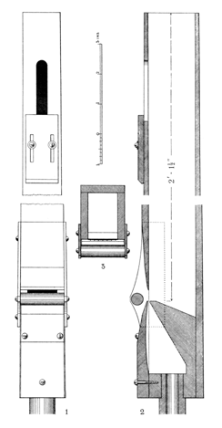

Violincello English
Violoncelle French
Violoncello Italian
Orchestral Violoncello English/Italian

|
'Cello Italian Violincello English Violoncelle French Violoncello Italian Orchestral Violoncello English/Italian |
|
A string stop imitative of the orchestral instrument of the same name, usually of 8' pitch, but occasionally found at 4' or 16'. Grove dates it from around 1700 in Germany. While Wedgwood claims that this stop is rarely found outside the pedal, nearly one third of the examples in Osiris are manual stops. Wedgwood describes it as a full-toned Gamba, and Skinner call it the "broadest and richest of all organ strings". Both wood and metal have been used to construct this stop; Audsley preferred wood, while Skinner seems to have preferred metal.
Bonavia-Hunt maintains that the best results are obtained from larger scales voiced on heavy pressure (e.g. 6"). He provides two scales (in metal):
| CC | tenor C | middle c | c' | |
| first scale | 4" | 2-3/8" | 1-1/2" | 15/16" |
| second scale | 3-1/8" | 2" | 1-3/16" | 7/8" |
Audsley gives us the following descriptions of two different wooden Violoncello stops:
A Violoncello, 8 ft., of delicate and imitative character is made with pipes having inverted mouths and a modified form of the frein harmonique, as shown in [the accompanying drawing]. The drawings aretaken from the CC pipe, made for us by Messrs. Peter Conacher & Co., of Huddersfeld, Yorkshire [England]. The scale of the pipe is 2 7/8 inches in width by 3 3/4 inches in depth, and the height of mouth is 7/8 inch. The block is sunk 1/2 inch below the mouthl the under lip is sharp and has no nicking; the cap is straight on the inside and has no nicking; the upper lip is cut to almost a sharp edge; and the frein harmonique is a stout plate of hard metal held firmly in a saw-cut in the upper end of the cap. The pipe is made of white pine 9/16 inch thick, with the mouth and cap of black walnut; it has a slot cut in its upper end, 4 inches long by 1 1/8 inches, placed 4 inches from the top. The pipe is tuned by means of a piece of wood sliding over a portion of the slot. The hole in the foot is only 1/2 inch, but that is ample to supply the pipe.
Probably the most successful Violoncello, 8 ft., constructed by an English organ builder, is that invented by Mr. John W. Whiteley. A fine example of this stop appears in the Solo division of the Concert-room Organ in the Polytechnic Institute, Battersea, London [England]. In the construction and treatment of the pipes of this valuable stop some novel features obtain, as will be seen from the drawings and particulars here given — features which, in our opinion, point the way to further developments of an important character. In the accompanying illustration is shown part of the middle c1 pipe of this stop, the scale of which is 1 inch in width by 1 9/16 inches in depth. It will be observed from the illustration that, while the internal dimensions are the same throughout the length of the pipe, the wood, of which it is formed, is evenly reduced in thickness toward the top, being 1/4 inch at the block and only about 1/8 inch thick at the open end. The result of this unusual treatment goes to prove that the thickness of the wood used in pipe-making exercises an influence on the tone produced. ... The mouth is cut up one-third of its width, and its upper lip is reduced to a fine edge. The lower lip on the block is also sharp, and has no nicking. The cap is slightly hollowed on its inside, also to a somewhat sharp edge, in which a slightly curved wind-way is cut, and finished with seven small nicks. A special pculiarity obtains in the manner in which the cylindrical harmonic-bridge is supported in front of the mouth. This bridge, instead of being simply the length of the mouth, and being attached to small ears, is carried across the entire width of the pipe, and is supported by two thick spotted-metal plates, which are screwed to the sides of the pipe. The front edges of these places are sloped away from the bridge so as to free the wind in the neighborhood of the mouth: in deed the entire construction of the mouth portion of the pipe insures perfect freedom to the under stram of air which is generated by the rushing wind-sheet of the mouth. This is essential to the production of the compound tone which so closely imitates that of the orchestral Violoncello. In the larger pipes the harmonic-bridges are made of hardwood, while in the small pipes they are made of aluminium tubing, held in position by points punched inward in the metal side-plates.
Williams gives us a description of a reed form of Violoncello:
A Venetian 8' regal generally made of wood, the resonators very small and similar to the Tromboncini; frequently the only non-flue stop in a late 18th-cent. Venetian organ. Boxwood often the material, but the Serassi firm also made them with short cylindrical pipes, resembling a small Krummhorn (Bastia, 1844).
On the theatre organ, according to Strony, the Violincello is usually a two-rank celeste formed from Violin pipes. It varies greatly in timbre and volume, and is found at 16', 8' and 4'.
See also Viola.|
'Cello Celeste 'Cello Diapason 'Cello-Dolce 'Cello Violin Echo 'Cello |
Muted 'Cello Solo 'Cello Violoncello Pomposa Violoncello Sordo Violoncello Vibrato |
Osiris contains 175 examples of Violoncello, 88 examples of Cello, 62 examples of Violoncelle, and 15 examples of Violincello. Eight of these are at 16' pitch, five are at 4', and the rest are at 8'.
Cello 8', Manual I; Ochsenhausen, Baden-Württemburg, Germany; Gabler 1755.
Orchestral Cellos 8' II, Swell; First Baptist Church, Denver, Colorado, USA; Aeolian-Skinner 1945. This is the only known example of this name.
Cello 8', Pedal; Memorial Hall, Methuen, Massachusetts, USA; Walcker 1863.
Violoncello 8', Chancel Pedal; First Congregational Church, Los Angeles, California, USA; Skinner/Schlicker 1995.
Violoncelle 8', Pédale; La Trinité, Paris, France; Cavaillé-Coll 1868.
Violincello 8', Pedal; Congregational Church, Great Barrington, Massachusetts, USA; Roosevelt 1883.
|
Original website compiled by Edward L. Stauff. For educational use only. Violoncello.html - Last updated 20 January 2008. |
Home Full Index |